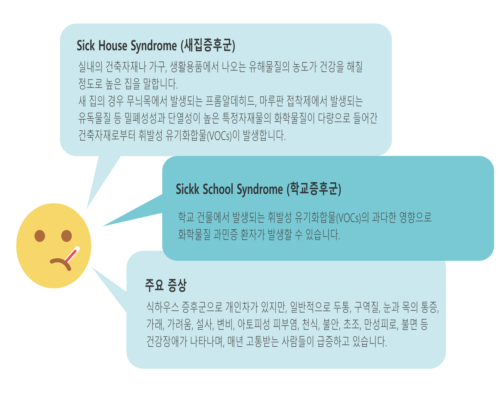
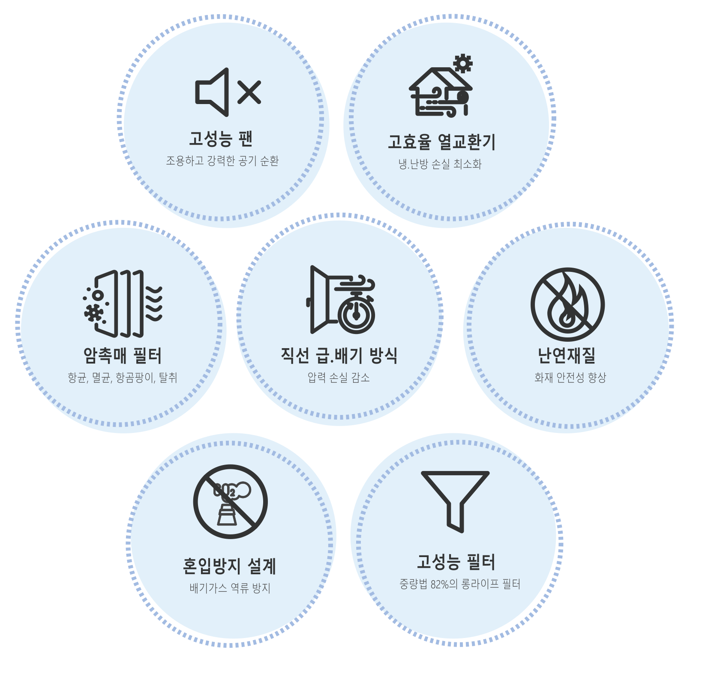

전열교환기의 필요성부터 구조, 기능, 관리까지 한눈에
전열교환기는 실내 공기를 환기시키는 동시에 냉·난방 에너지를 회수하여 에너지 절감과 쾌적한 실내 환경을 동시에 제공합니다.
실내/실외 온도 표시, 풍량 조절, 자동운전 및 수면모드, ON/OFF 제어, 필터 교체 알림, 히터 및 댐퍼 제어(옵션) 등 다양한 제어 기능이 포함되어 있습니다.

이처럼 현대 주거환경은 고밀도·고밀폐 구조로 인해 자연 환기가 어려우며, 이로 인해 실내 공기 오염이 건강 문제를 야기합니다.
전열교환기는 실내의 오염된 공기를 외부로 배출하고, 외부의 신선한 공기를 실내로 유입하면서 냉·난방 에너지를 회수합니다.
효율적인 열교환 구조와 다양한 제어 기능이 통합되어 있어 사용의 편의성과 안정성을 높여줍니다.

암촉매 필터는 세균, 곰팡이, 냄새까지 동시에 제거하여 위생적인 실내공기를 유지합니다.